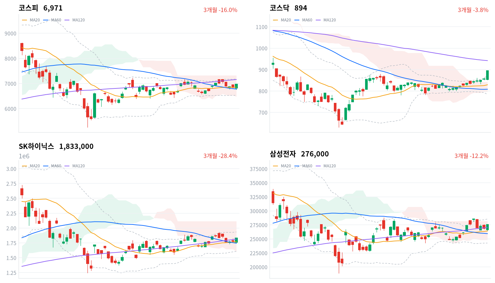

마이크론 실적과 9월 반도체 수출이 같은 날 나오자 코스피는 장 초반 하락을 딛고 하루 고가에서 마감했고, 코스닥은 소부장·바이오가 함께 뛰었다. 외국인 코스피 순매도는 연휴 뒤 처음 1조원 아래로 줄었다(당일 잠정).
미국 10년물이 더 오른 날의 반등이라, 우리는 할인율이 반도체를 일방적으로 누르던 국면이 약해졌다고 본다. 코스피 노출은 유지하고 반도체 비중 확대는 금리가 오르는 날 하루를 더 확인한 뒤로 미룬다.
코스피는 1.95% 오른 6,971로 하루 고가에서 마감했고, 코스닥은 4.48% 뛰어 894가 됐다. 코스피는 0.34% 내린 채 출발해 장 초반 6,765까지 밀렸지만 반도체가 반등을 이끌었다(SK하이닉스 +3.21%, 삼성전자 +2.79%). 같은 날 새벽 마이크론이 시장 예상을 웃돈 분기 매출과 다음 분기 가이던스를 냈다. 오전에는 산업통상부가 9월 반도체 수출이 603억달러로 1년 전보다 262.8% 늘었다고 발표했다. 외국인 코스피 순매도는 5,572억원으로 줄었다(전 거래일 2조646억원, 당일 잠정).
채권시장은 같은 날 경계를 풀지 않았다. 미국 10년물은 9월 30일(현지) 5.293%로 3.8bp 더 올랐고, 국고채 10년물도 2.9bp 올라 사흘 만에 상승으로 돌아섰다. 회사채 AA- 3년물과 국고채 3년물의 금리차는 69.1bp로 거의 그대로였고, 최근 2년(534거래일) 가운데 이보다 넓었던 날이 32일뿐이다. 할인율도 신용 경계도 그대로인데 주식은 반도체 이익을 먼저 값매겼다. 우리는 이 어긋남을 이익 재료가 금리 부담을 이기기 시작한 신호로 본다.
금리가 오른 날 반도체가 지수를 끌었다는 점이 핵심이다. 반도체와반도체장비 업종은 172종목 가운데 162종목이 올라 상승이 넓었고, 외국인 매도는 연휴 뒤 가장 작았다. 할인율이 반도체 가격을 일방적으로 누르던 국면은 약해졌다고 판단한다. 연휴 뒤 사흘간 8조원 넘게 판 외국인의 매도가 소진되며 나온 되돌림이었을 수도 있으나, 이익 재료 두 개가 같은 날 나온 만큼 이익 쪽에 무게를 둔다. 두 설명은 미국 10년물이 하루 5bp 이상 오른 다음 세션에서 갈린다. 그날 반도체가 코스피를 1%포인트 넘게 밑돌거나 외국인 순매도가 다시 2조원을 넘으면 되돌림 쪽이다.
코스피 노출은 다음 세션까지 유지하고, 반도체 비중을 늘리는 판단은 금리가 오르는 날 하루를 더 본 뒤로 미룬다. 오늘 상승에는 중간 정도의 무게만 둔다. 이익 재료와 매도 소진이 한날에 겹친 하루이기 때문이다. 오늘은 새 상품을 대지 않는다. 기다리는 것은 10월 2일 세션의 반도체 상대강도와 외국인 순매도 규모, 같은 날 밤 9시 30분(한국시간) 미국 9월 고용보고서 뒤 미국 10년물의 방향과 그것을 받는 10월 5일 세션이다. 삼성전자 3분기 잠정실적도 10월 초에 나오지만 날짜는 아직 정해지지 않았다.
코스피가 20일 이동평균(6,855) 아래에서 마감하면 이 판단을 다시 본다. 오늘 종가보다 약 1.7% 낮은 자리이고, 오늘 오전 지수가 되찾은 선이다. 이 선을 종가로 다시 내주면 오늘 반등을 이익 재료가 아닌 매도 소진의 되돌림으로 보고, 노출 유지의 전제를 거둔다.
9월 30일 판단은 유효하다. 그날 정한 무효화 선인 코스피 6,795는 종가로 지켜졌고 여유는 176포인트였다. 장중 저가는 그 선을 잠시 밑돌았지만 기준은 종가다. 기다린 조건은 절반만 왔다. 마이크론 실적과 9월 반도체 수출은 반도체에 우호적으로 나왔고 외국인 순매도도 1조원 아래로 줄었지만, 미국 10년물은 8월 PCE 뒤에도 내려오지 않고 더 올랐다. 노출 등급은 유지하되 두 가지를 고친다. 무효화 선을 20일선으로 올리고, 질문을 외국인 매도의 원인에서 이익 재료가 금리 부담을 이기는가로 옮긴다. 어제 대형 반도체 고유 요인 쪽에 무게를 둔 해석은, 금리가 오른 날 두 대형주가 함께 반등하면서 힘을 잃었다.
전일 미국 증시는 9월 30일(현지) 엇갈렸다(S&P500 -0.25%, 나스닥 +0.24%, 다우 -0.86%). 오늘 아시아에서는 닛케이가 3.3% 뛰었고 대만가권도 0.86% 올랐다. 항셍(+0.37%)과 상해종합(+0.31%)은 9월 30일 종가 기준이다. 네 지수 평균은 1.21% 상승이었고, 코스피는 이보다 0.74%포인트 앞섰다.
시가는 전 거래일 종가 6,838보다 낮은 6,814였다. 마이크론 실적이 새벽에 나왔지만 개장 갭은 아래로 열렸다. 한국 정규장 동안 미국 선물은 올랐다(S&P500 선물 +0.17%, 나스닥100 선물 +0.87%). 장중 반등에는 밖의 바람도 함께 불었다.
코스피는 하루 고가와 사실상 같은 자리에서 마감했고, 코스닥도 고가에서 끝났다. 원/달러 환율은 장 초반 1,363원이 고점, 오후 1,356원이 저점이었고 1,359원으로 마감했다.
반도체 이익 재료가 장 초반 매도를 이긴 날이다. 아시아경제와 뉴스1은 장 초반 외국인·기관 동반 매도에 지수가 6,765선까지 밀렸다가 반도체 중심으로 반등했다고 전했다. 반등은 반도체 대형주에서 시작해 코스닥 소부장과 제약·바이오로 번졌고, 금융주와 정유주는 거슬러 내렸다. 정유주 약세는 같은 날 국제유가 하락과 겹쳤다. 코스닥 상승률은 코스피의 두 배를 넘었다. 시간외 거래와 장중 투자자별 흐름은 받을 수 있는 자료가 없어, 매도가 언제 매수로 바뀌었는지는 확인하지 못했다.
코스피는 하루에 133포인트 올라 7,000선을 29포인트 남기고 마감했다. 20일선과 60일선 위로 다시 올라섰지만, 120일선(7,158)과 최근 20거래일 고점(7,172)은 아직 위에 있다. 코스닥은 더 강했다. 볼린저 상단을 뚫고 최근 60거래일 고점을 새로 썼고, 서울경제는 코스닥이 11거래일 동안 10.8% 올라 같은 기간 코스피의 두 배를 넘었다고 전했다.
| 지수 | 종가 | 등락률 | 시가 | 고가 | 저가 | 전일 종가 |
|---|---|---|---|---|---|---|
| 코스피 | 6,971.35 | +1.95% | 6,814.49 | 6,971.36 | 6,765.06 | 6,838.04 |
| 코스닥 | 894.29 | +4.48% | 853.96 | 894.29 | 851.92 | 855.91 |
코스피는 개장 직후 60일선(6,776)과 일목 기준선(6,790)을 장중에 잠깐 밑돌았지만, 오전 중 20일선을 되찾았고 오후 들어 전환선(6,935)을 넘어선 뒤 고가에서 끝났다. 저점을 찍은 뒤 한 번도 크게 되밀리지 않은 경로다. 지수를 끈 것은 반도체와 부품 대형주였다(삼성전기 +3.17%, 삼성전자우 +4.76%, 한미반도체 +4.68%). 자동차 부품주도 힘을 보탰다(현대모비스 +4.09%, 한온시스템 +4.4%). 금융주는 거슬러 내렸다(우리금융지주 -4.73%, 신한지주 -2.17%, KB금융 -1.66%).
반도체 밖 대형주는 엇갈렸다. 바이오와 2차전지 대형주는 올랐고(삼성바이오로직스 +2.73%, 셀트리온 +3.32%, LG에너지솔루션 +0.98%), 전력기기와 원전주는 소폭 오르는 데 그쳤다(HD현대일렉트릭 +1.66%, 두산에너빌리티 +0.61%). 조선·건설·지주는 내렸다(HD현대중공업 -0.46%, GS건설 -2.95%, LS -3.4%). 오른 업종은 넓었지만 지수 상승분의 무게는 반도체와 부품 대형주에 실렸다. 금융주 약세는 하루 내내 이어져, 반등이 위험선호 전반이 아니라 이익 전망이 오르는 업종에 몰렸다는 점을 보여 준다.
코스닥은 854에서 출발해 저가 852를 찍은 뒤 하루 내내 계단식으로 올라 고가에서 마감했다. 반도체 소부장과 바이오가 함께 끌었고, 900선까지는 6포인트가 남았다.

코스피·코스닥·SK하이닉스·삼성전자 3개월 일봉에 이동평균(20·60·120)·볼린저밴드·일목균형표 구름대를 겹쳐 그렸다. 상승 캔들은 녹색, 하락 캔들은 적색이다.
코스피는 20일선과 60일선 위, 120일선 아래에서 마감했고 일목 구름 안에 있다. 120일선(7,158)을 넘으면 볼린저 상단(7,180)까지 열리고, 전환선(6,935)을 내주면 20일선(6,855)이 다음 지지선이다.
코스닥은 볼린저 상단(873)을 뚫고 일목 구름 위에서 60거래일 고점을 새로 썼다. 900선을 넘으면 120일선(942)이 다음 저항이고, 볼린저 상단 아래로 되돌아오면 전환선(855)이 다음 지지선이다.
SK하이닉스(183만3천원)는 20·60·120일선 위로 올라섰지만 일목 구름 안에 있다. 볼린저 상단과 20일 고점이 겹친 193만원대가 첫 저항이고, 120일선(181만원)을 내주면 일목 기준선(175만원)이 다음 지지선이다.
삼성전자(27만6천원)는 120일선(27만1천원)을 되찾았고 일목 구름 안 위쪽에 있다. 구름 상단(28만2천원)을 넘으면 20일 고점(28만5,500원)이 다음 저항이고, 120일선을 내주면 20일선(26만4천원)이 다음 지지선이다.
위 레벨은 이동평균·볼린저밴드·일목균형표와 스윙 고저를 기계적으로 계산한 값이며 투자 권유가 아니다.
| 주체 | 순매수(억원) |
|---|---|
| 개인 | -14,171 |
| 외국인 | -5,572 |
| 기관 | +3,321 |
| 주체 | 순매수(억원) |
|---|---|
| 개인 | -7,790 |
| 외국인 | +2,303 |
| 기관 | +5,683 |
외국인 매도가 줄고 기관이 사면서 지수가 올랐다. 외국인은 코스피에서 5,572억원을 순매도했다(전 거래일 2조646억원 순매도, 당일 잠정). 연휴 뒤 나흘 합계는 8조8,822억원이지만, 하루 매도 규모는 사흘째 줄었다. 기관은 3,321억원 순매수로 돌아섰다(전 거래일 7,993억원 순매도). 개인은 1조4,171억원을 팔아 연휴 뒤 사흘 이어진 매수를 끊었다(전 거래일 1조2,109억원 순매수).
종목별 투자자 자료가 없어 외국인이 반도체 대형주를 사서 매도가 줄었는지, 다른 종목 매도가 줄었는지는 가를 수 없다. 10월 2일 세션에서 외국인 순매도가 오늘 수준에 머무는지가 다음 확인점이다.
코스닥에서는 외국인이 2,303억원(전 거래일 713억원 순매도), 기관이 5,683억원(전 거래일 482억원 순매수)을 사들였고, 개인은 7,790억원을 팔았다(당일 잠정). 기관 순매수는 최근 열 거래일 가운데 가장 크다. 같은 날 소부장 강세와 중소형주 리서치 확대 방안이 겹쳐, 어느 쪽이 기관 매수를 불렀는지는 아직 갈리지 않는다.
장중 누적 수급과 프로그램 매매는 받을 수 있는 자료가 없어 싣지 않는다.
| 순위 | 종목/ETF | 구분 | 거래대금 | 비고 |
|---|---|---|---|---|
| 1 | SK하이닉스 | 개별주 | 3.89조원 | - |
| 2 | 삼성전자 | 개별주 | 3.64조원 | - |
| 3 | 반도체 테마 ETF | 테마·롱 | 2.27조원 | 28종 합산 |
| 4 | KODEX CD금리액티브(합성) | 단기금리·현금성 | 0.99조원 | - |
| 5 | 삼성전기 | 개별주 | 0.96조원 | - |
| 6 | 삼성전자우 | 개별주 | 0.54조원 | - |
| 7 | SK스퀘어 | 개별주 | 0.53조원 | - |
| 8 | 대덕전자 | 개별주 | 0.26조원 | - |
| 9 | SK하이닉스 레버리지 | 레버리지·롱 | 0.22조원 | 5종 합산 |
| 10 | 삼화콘덴서 | 개별주 | 0.20조원 | - |
단위 백만원 원본을 조 단위로 환산했다. 같은 기초자산 ETF는 방향별로, 같은 테마 섹터 ETF는 테마별로 묶고 지수·해외 ETF는 제외했다.
거래는 반도체로 쏠렸다. SK하이닉스와 삼성전자의 거래대금은 7.53조원이고, 반도체 테마 ETF 28종을 합친 2.27조원이 3위다. 매매는 바스켓보다 개별 대형주에 더 몰렸다. 방향 상품으로는 SK하이닉스 단일종목 레버리지 5종이 9위에 들었고, 상위 열 자리에 인버스 상품은 없다. 롱 상품 거래가 활발했던 것은 반도체 업종이 넓게 오른 가격과 같은 쪽이지만, 거래대금만으로는 매수와 매도 가운데 어느 쪽이 컸는지 알 수 없다.
부품주가 상위에 여럿 올랐다. 삼성전기(+3.17%)가 5위, 대덕전자가 8위에 들었고 삼화콘덴서도 상위권에 올랐다. AI 반도체용 기판·부품 기대가 대형주 밖으로 번진 모습이다. KODEX CD금리액티브(합성)는 단기금리를 따르는 자금 대기용 상품이라 방향성 거래와 결이 다르고, 금리·채권형 ETF로 자금이 몰린다는 보도와 같은 쪽이다.
WICS 12개 섹터 가운데 9개가 올랐다. 반도체(+4.91%)와 헬스케어(+4.11%)가 앞섰고 로봇(+2.34%)·증권(+2.20%)이 뒤를 이었다. 은행(-2.03%)이 가장 크게 내렸고 건설(-0.74%)·조선(-0.36%)도 약했다. 1주로 넓히면 반도체(+9.51%)·헬스케어(+5.24%)·2차전지(+2.52%)·자동차(+0.08%)만 올랐다.
네이버 업종 기준으로 반도체와반도체장비는 2.15% 올랐고 172종목 가운데 162종목이 함께 올랐다. 대형주 두 종목만의 반등이 아니라 업종 전체가 오른 폭넓은 주도다. WICS 반도체와 상승률이 다른 것은 두 분류의 구성과 비중이 달라서다.
반도체 밖의 상승도 넓었다. 제약(+3.30%)은 175종목 가운데 134종목, 생물공학(+5.57%)은 59종목 가운데 43종목이 올랐다. 전자장비와기기(+2.98%)도 105종목 가운데 80종목이 올랐다. 우주항공과국방(+2.56%)도 35종목 가운데 28종목이 올랐다. 반면 생명과학도구및서비스(+5.23%)는 41종목 가운데 26종목만 올라, 일부 종목이 끌어올린 좁은 상승이다.
반도체 대형주와 소부장이 함께 올랐다(SK하이닉스 +3.21%, 삼성전자 +2.79%, 디아이 +13.08%, 이수페타시스 +7.21%). 아이뉴스24는 두 대형주가 장 초반 하락을 딛고 반등해 코스피를 이끌었고, 마이크론 호실적과 9월 수출 호조가 반도체 강세에 영향을 줬다고 전했다. 디아이와 이수페타시스는 확인된 개별 재료 없이 업황 기대에 함께 올랐다.
정유주가 크게 내렸다(SK이노베이션 -6.18%, S-Oil -7.98%). 파이낸셜뉴스는 사우디 동서 송유관 재가동과 얀부 선적 재개 보도로 브렌트유 12월물이 96.96달러로 1.09% 내렸다고 전했다. 유가는 함께 내렸지만 두 종목의 낙폭을 설명할 확인된 재료는 없다.
기판주가 급등했다(대덕전자 +12.75%, 코리아써키트 +6.33%). AI 반도체용 고성능 기판 수요 기대 속에 반도체 강세를 따라 올랐고, 재경일보는 뚜렷한 개별 호재는 없었다고 전했다.
삼화콘덴서는 6.37% 올랐다. 확인된 재료는 없다.
방산주가 함께 올랐다(LIG디펜스앤에어로스페이스 +6.16%, 한화시스템 +5.2%). 당일 새 수주 공시는 확인되지 않았고, 핀포인트뉴스는 중동향 유도무기 수출이 본격화되며 수익성 개선 기대가 커졌다고 전했다.
제약·바이오로도 순환매가 번졌다. 뉴스1은 한올바이오파마가 9.98%, 삼성에피스홀딩스가 7.95% 올랐다고 전했고, 셀트리온도 3.32% 올랐다. NC는 10.05% 뛰었지만 확인된 재료는 없다.
국고채 금리는 사흘 만에 장기물부터 올랐다. 10년물이 2.9bp 올라 4.436%가 됐고 3년물은 거의 그대로여서, 두 만기의 금리차는 42.6bp로 3.0bp 벌어졌다. 이 금리차는 최근 2년(534거래일) 가운데 넓은 쪽 19% 안이다. 원/달러 환율은 1,359원으로 마감했다.
| 지표 | 금리 | 전일比(bp) | 기준일 |
|---|---|---|---|
| 국고채 3년 | 4.01% | -0.1 | 2026-10-01 |
| 국고채 10년 | 4.436% | +2.9 | 2026-10-01 |
| CD 91일 | 3.21% | -1.0 | 2026-10-01 |
| 회사채 AA- 3년 | 4.701% | -0.2 | 2026-10-01 |
| 한국은행 기준금리 | 3.00% | 0.0(전월比) | 2026-09 |
기준금리는 9월 기준이다.
국고채 10년물은 하루 늦게 미국을 따라갔다. 미국 10년물은 9월 30일(현지) 5.293%로 올랐고, 한국일보는 장중 5.304%로 24년 만의 최고였다고 전했다. 앞선 이틀 미국과 반대로 내렸던 국고채가 오늘은 같은 방향으로 움직였다. 단기물은 움직이지 않아, 이번 상승은 정책 기대보다 장기 구간의 할인율이 오른 것으로 본다.
국고채 3년물은 기준금리보다 101.0bp 높아, 같은 기간 가운데 넓은 쪽 15% 안에 있다. 이 격차에는 정책 경로 기대와 기간프리미엄이 섞여 있다. CD 91일물도 1.0bp 내렸다.
신용 쪽은 조용했다. 회사채 AA- 3년물이 0.2bp 내려 신용 스프레드는 0.1bp 좁혀졌다. 머니투데이는 같은 AA급이라도 전망이 안정적인 발행사는 민평보다 낮은 금리로, 전망이 부정적인 SK지오센트릭은 25~40bp 높은 금리로 발행했다고 전했다. 신용 경계는 높은 자리에서 멈춰 있고, 업황이 나쁜 발행사에만 차별이 걸린다.
아시아경제와 뉴스핌에 따르면 금융위원회와 금융감독원은 9월 30일 금투업권 모험자본 역량강화 협의체에서, 종합금융투자사업자 9곳이 연간 리포트의 4분의 1 이상을 코스피 시가총액 300위 미만·코스닥 150위 미만 종목으로 채우도록 추진한다고 밝혔다. 그 가운데 절반 이상은 코스닥 150위 미만이어야 하고, 매도 의견 리포트에는 작성자 이름을 빼는 선택권이 생긴다.
경로는 멀티플과 수급이다. 커버리지가 없던 중소형주의 정보 비대칭이 줄면 할인이 좁혀질 여지가 있고, 코스닥에 대한 기관 관심도 커질 수 있다. 오늘 코스닥 강세와 기관 순매수는 그 방향과 맞지만, 같은 날 반도체 소부장과 바이오가 함께 뛰어 정책 몫을 떼어 낼 수 없다. 증권사에는 리서치 비용 부담이 늘어난다. 시행 시기와 제재 수단은 보도에서 확인되지 않았고, 감독규정·모범규준 개정안이 나오는지가 다음 분기점이다.
파이낸셜뉴스와 아시아경제에 따르면 트럼프 대통령은 9월 30일(현지) 3,500억달러 대미투자의 첫 프로젝트로 텍사스 가스복합화력발전소(223억달러)를 공개했다. 한국 정부가 확정한 것은 이 한 건이다. 대형 원전 8기와 알래스카 LNG는 미국 측 발표일 뿐, 한국 정부는 정해진 바 없다는 입장이다.
경로는 이익이다. 원전 기자재·EPC와 강관·철강이 수주 기대를 받는다. 이데일리에 따르면 대신증권은 코스피 영향은 제한적이고 원전 주기기·기자재·LNG 밸류체인에는 기회라고 평가했다. 오늘 가격 반응은 약했다. 두산에너빌리티는 0.61% 오르는 데 그쳤고, 네이버 철강 업종은 0.37% 올랐지만 55종목 가운데 26종목만 올랐다. 전날 원자력·철강주가 먼저 뛰었고, 오늘은 기대가 더 붙지 않았다. 원전·알래스카 LNG 참여 확정과 프로젝트별 수주 공시가 다음 분기점이고, 일정은 미확정이다.
한국은행 기준금리는 3.00%로 그대로이고 이번 주 금융통화위원회 일정은 없다. 국내 금리를 움직일 다음 재료는 10월 2일 밤(한국시간) 나오는 미국 9월 고용보고서이고, 그 결과는 10월 5일 세션에 반영된다. 국내 증시는 10월 9일 한글날에 쉰다.
마이크론엔 시큰둥, 채권엔 들썩… 미 국채 5.3%에 개미 지갑 열렸다한국일보 · 10월 1일
미국 10년물 국채 금리가 24년 만에 최고인 5.304%까지 올라가자 개인 투자자들이 채권으로 자금을 옮기고 있다. 마이크론이 회계연도 4분기 매출 542억3,000만 달러로 사상 최대 실적을 기록했음에도 주가는 애프터마켓에서 0.37%만 상승하며 실적 호재가 주식 시장에 반영되지 못했다. 미 물가지표가 예상치를 밑돌아 단기 금리 인상 가능성은 낮아졌지만, 2분기 경제성장률이 상향 조정되면서 고금리의 장기화 가능성이 커졌다는 평가가 나온다. 이에 따라 높은 이자 수익을 기대할 수 있는 채권의 매력이 커졌다. 개인 투자자의 지난달 국내 채권 순매수액은 4조225억 원으로 연중 최고치를 기록했고, 미국 국채 관련 펀드(10년물·30년물)에도 48억9,100만 원어치가 순매수되며 한 달 전 대비 세 배 이상 증가했다.
금리 급등기 회사채 발행 나선 AA 기업군…전망 한글자에 금리 엇갈려머니투데이 · 10월 1일
미국 금리 급등 속에서 AA등급 우량 기업들의 회사채 발행 수요예측 결과가 등급전망에 따라 갈렸다. 신용등급 AA- 현대트랜시스는 안정적 전망으로 1500억원 모집에 7500억원 주문을 받아 민평금리보다 2~3bp 낮은 금리로 발행했고, AA+ SK도 안정적 전망으로 1500억원 모집에 7200억원 주문을 확보해 민평 대비 2~4bp 낮은 조건을 받았다. 반면 동일 등급의 SK지오센트릭은 부정적 전망으로 700억원 모집에도 민평보다 25~40bp 높은 오버금리가 적용됐다. 신평사가 석유화학 업황이 나빠져 수익성이 떨어졌다는 이유로 향후 1~2년 내 등급 하락 가능성을 시사했기 때문이다. 기관투자자들이 벤치마크 맞춤을 위해 신용채권 수요를 이어가고 있으나, 시장금리 상승으로 증권사들이 적극적 인수에 나서기 어려워지고 있다. 기업들은 미국 금리 경로 불확실성 속에서 지금 조달할지 연초 효과를 기대하며 관망할지 판단이 엇갈리는 상황이다.
서학개미, 美주식 '숨 고르기'… 채권은 15년 만에 최대 순매수이데일리 · 10월 1일
국내 투자자들이 미국 주식 매수세를 줄이고 채권으로 자금을 옮기는 추세를 보이고 있다. 3분기 미국 주식 순매수는 76억달러로 지난해 4분기 정점(146억달러)의 절반 수준으로 감소했으며, 같은 기간 미국 채권 순매수는 40억7천만달러(약 5조5천억원)로 2011년 집계 이후 분기 기준 최대 규모를 기록했다. 미국 10년물 국채 금리가 5.3%까지 오르며 채권의 이자 수익 매력이 커진 데다, 주식과 채권의 기대수익률 차이를 나타내는 일드갭이 0%포인트 부근까지 낮아져 주식의 상대적 투자 매력이 약해졌기 때문이다. 특히 서학개미들의 자금은 초단기 미국 국채 ETF인 'SGOV'에 집중되고 있는데, 이는 금리가 변해도 가격 등락이 거의 없는 현금성 자산으로서 환율 변동 속에서 달러 자산을 확보하려는 수요가 반영됐다는 분석이다.
“트럼프 韓 대미투자 발표, 코스피 영향 제한적…원전엔 기회”이데일리 · 10월 1일
트럼프 미국 대통령이 지난달 30일 한국의 대미 전략투자 프로젝트로 텍사스 가스복합화력발전소, 대형 원전 8기, 알래스카 LNG 사업 등을 공개했다. 미국 측이 발표한 총 규모는 약 2000억달러에 이르지만, 한국 정부가 확정한 투자는 텍사스 가스복합화력발전소 223억달러뿐이며 원전과 알래스카 LNG는 아직 검토 단계다. 대신증권에 따르면 이 투자는 코스피에 중립적이나 원전 주기기, 기자재, 가스터빈, LNG 밸류체인 관련 기업에는 수주 기회가 될 수 있다. 연간 송금 규모가 최대 122억달러 수준으로 경상수지에 비해 미미해 환율과 금리에 미치는 직접 영향은 제한적이지만, 한국가스공사의 알래스카산 LNG 구매 압력과 철강·유틸리티 기업의 관세 부담이 이슈다. 향후 협상 결과, 한국 기자재 비중 명시, 철강 관세 완화 문서화 등이 핵심 변수가 될 전망이다.
트럼프 한마디에 "주가 펄펄"...일단 웃은 철강주, 변동성 불가피머니투데이 · 10월 1일
트럼프 미국 대통령이 30일 한국의 대미 투자 프로젝트를 공개하자 국내 증시에서 원자력주와 철강주가 동반 상승했다. 한국 정부가 최대 2000억달러를 투자해 텍사스에 6GW 규모 발전 시설과 원자력발전소 8기, 알래스카 LNG 파이프라인을 건설하기로 밝혀진 것이다. 원일티엔아이는 상한가를 기록했고 위드텍, 비츠로테크 등 원자력주들이 1~5% 상승했으며, 대한제강은 16.82% 오른 9100원을 기록했다. 전문가들은 중장기적으로 한국형 원전 APR1400의 시장 점유율 확대와 웨스팅하우스 지분 인수로 원전 수출 기반을 마련해 원자력주 성장이 지속될 것으로 전망했다. 다만 알래스카 LNG 프로젝트는 한국 정부가 검토 단계일 뿐 투자 여부가 확정되지 않아 철강주의 변동성이 커질 가능성이 있다.
해묵은 증권사 교육세 논란…공은 다시 국회로한국경제 · 10월 1일
증권사가 유동성 공급 역할 수행 중 발생하는 매매 손실을 교육세 과세표준에서 제외해 지나친 세금 부담을 지고 있다는 논란이 이어지고 있다. 현행 교육세법은 매매이익만 과세표준에 포함하고 헤지 거래 손실을 차감하지 않아 실제 이익보다 과도한 세액을 부과하는 문제가 있으며, 올해 세율이 0.5%에서 1%로 올라가면서 부담이 가중됐다. ETF 시장 성장으로 종합금융투자사업자 10개사의 올해 교육세 납부액은 4949억원으로 전년 대비 639% 증가할 것으로 추정된다. 정부가 세제 개편에서 이 문제를 제외하자 김상훈 국민의힘 의원이 지난달 28일 손익통산을 적용하는 교육세법 개정안을 발의했다. 업계는 과세 구조 개선이 없으면 호가 스프레드 확대로 이어져 결국 투자자의 암묵적 거래 비용이 늘어날 수 있다고 우려하고 있다.
'7000피' 다시 눈앞⋯삼성전자·SK하이닉스 끌었다아이뉴스24 · 10월 1일
삼성전자와 SK하이닉스가 장 초반 하락을 극복하고 각각 2.79%, 3.21% 상승하며 코스피 반등을 주도했다. 1일 코스피는 전날 대비 133.31포인트(1.95%) 오른 6971.35로 마감했고, 기관 순매수가 지수 회복을 뒷받침했다. 마이크론의 호실적 발표와 한국의 9월 수출 호조가 반도체 업종 강세에 영향을 미쳤다. 코스닥은 반도체 소부장과 제약·바이오주 강세로 5거래일 연속 상승해 894.29(4.48% 상승)를 기록했으며, 900선을 앞두고 있다. 방산주와 시가총액 상위 대형주들도 대부분 상승했으나 금융주는 약세를 나타냈다.
소부장 훈풍·중소형 리서치 강화 ‘쌍끌이’…질주하는 코스닥 [마켓시그널]서울경제 · 10월 1일
코스닥지수가 4.48% 상승하며 894.29로 마감했으며, 지난 11거래일 동안 10.8% 올라 같은 기간 코스피의 4.3% 상승률의 2배 이상을 기록했다. 마이크론의 실적 호조와 한국의 9월 수출 사상 최대치 경신으로 위험자산 선호 심리가 회복되면서 원익IPS, 이오테크닉스, 리노공업 등 반도체 소부장 기업들이 6~11% 급등했다. 정부가 발표한 중소형주 지원 정책도 긍정적 영향을 미쳤는데, 국내 9개 종합금융투자사업자는 연간 발간 보고서의 25% 이상을 시가총액 하위 기업에 할당해야 하고, 신규 상장 기업에 대한 리포트 공표 의무는 1년 2회 이상에서 3년간 연 2회 이상으로 강화된다. 애널리스트의 독립성을 위해 매도 보고서 발간 시 익명 공시가 허용되고, 성과 평가 방식도 객관적 지표 기반으로 개편된다.
'괴물 실적' 예고한 삼전닉스 … 문제는 수급매일경제 · 10월 1일
삼성전자가 3분기 영업이익 100조원을 달성하고 SK하이닉스와 합산 분기 매출 300조원, 영업이익 186조원을 기록할 것으로 전망되면서 역대급 실적을 예고했다. 메모리 반도체 가격 상승과 AI용 고대역폭메모리가 늘며 공급 구조가 바뀐 것이 호실적을 견인했다. 다만 장기 금리가 급등해 경기가 둔화할 수 있다는 우려와 글로벌 고금리 기조가 투자심리를 억누르고 있어 두 회사 모두 주가가 횡보 중이며, 이달 중순 대규모 자사주 매입 종료로 인한 단기 수급 공백도 우려된다. 증권사는 삼성전자가 향후 3개년간 차기 주주환원 정책에서 600조원 규모의 현금배당과 자사주 매입을 추진할 수 있을 것으로 예상한다.
마이크론 호실적, 이젠 삼전닉스 서프라이즈 차례동행미디어 시대 · 10월 1일
마이크론이 2026회계연도 4분기 매출 542억2900만달러(전년 동기 대비 379.27% 증가), 영업이익 446억3600만달러(1028.60% 증가)로 시장 컨센서스를 크게 상회하는 실적을 발표했다. AI 투자 확대로 데이터센터와 클라우드 부문이 두드러진 성장을 이뤘으며, CEO는 2027~2028년 메모리 공급 부족이 심화할 것으로 전망했다. 반면 국내 반도체 기업들의 3분기 영업이익 컨센서스는 하향조정됐으나, 삼성전자와 SK하이닉스가 마이크론처럼 예상을 웃도는 실적을 내놓을 경우 코스피 7000선 돌파 등 국내 증시에 상승 모멘텀을 제공할 수 있다는 기대감이 제기된다. 다만 고금리 상황과 변동성 확대 가능성이 상승세 지속을 제약하는 요인으로 남아있다.
'저평가 매력' 바이오로 번진 온기…한올바이오 10%·삼성에피스 8%↑[핫종목]뉴스1 · 10월 1일
반도체주 강세에 힘입어 제약·바이오 업종으로 순환매 흐름이 이어졌다. 한올바이오파마는 전날 대비 9.98% 오른 4만 8500원, 삼성에피스홀딩스는 7.95% 상승한 37만 3500원에 거래를 마감했다. 녹십자와 셀트리온도 각각 5.12%, 3.32% 올랐다. 알지노믹스(23.28%), 앱클론(20.36%), 올릭스(14.05%), 에이비엘바이오(10.52%) 등 바이오주 전반이 상승률을 기록했다. 마이크론의 실적 호조가 반도체주 강세를 이끌었고, 이어 제약·바이오 업종이 실적 개선 기대와 상대적 저평가 매력을 바탕으로 상승했다. 대신증권 분석가는 투자심리 개선 상황에서 실적 대비 저평가된 제약·바이오 업종으로의 순환매가 이루어지고 있다고 설명했다.
‘요즘 투자할 데가 없다’ 갈 곳 찾는 뭉칫돈…‘이 ETF’로 일단 모인다 [투자360]헤럴드경제 · 10월 1일
고금리가 고착화되면서 투자자들이 주식 외 안정적 수익처를 찾는 추세가 강해지고 있다. 1일 코스콤 ETF체크에 따르면 지난 한 달간 금리·채권형 ETF로 자금이 집중됐는데, KODEX 머니마켓액티브에 1조7791억원이 유입돼 전체 ETF 중 가장 높은 수준을 기록했다. CD금리형과 종합채권형 ETF에도 각각 수천억원대의 자금이 모였다. 만기가 짧은 자산 중심의 머니마켓과 CD금리 상품은 금리 변동의 영향이 적어 주식시장의 방향성이 뚜렷해질 때까지 자금을 보관하려는 투자자 수요를 반영한 결과다. 다만 실제 증시 자금 규모는 연초보다 많은 수준을 유지 중이며, AI 관련 산업으로의 자금 집중은 지속될 것으로 보인다. SK증권 연구원은 다만 3분기 AI 기업 실적 발표에서 막대한 설비투자 규모뿐 아니라 이를 뒷받침할 현금흐름과 자금조달 능력을 함께 평가해야 한다고 지적했다.
정년 넘겨도 임금 그대로…고령자 모시는 日[글로벌왓]서울경제 · 10월 1일
일본이 10월 1일부터 시행하는 개정 '동일노동 동일임금' 가이드라인에 따라 정년 후 재고용 근로자는 명확한 이유 없이 임금을 깎을 수 없게 됐다. 비정규직 신분으로의 전환만으로도 처우 차등을 적용할 수 없으며, 수당과 휴가·복리후생도 사측이 기준을 설정해야 한다. 일본의 65세 이상 취업자는 943만 명으로 역대 최대이며 이 중 76.1%가 비정규직이다. 초고령사회 진입으로 인력난이 심화하는 가운데 일본은 임금피크제로 정년을 연장하는 한국과 달리 정년 폐지 또는 연장을 통해 고령 경력자를 확보하는 방식을 택했다. 건설업은 구인배율이 7.9배에 이를 정도로 극심한 인력난을 겪으면서 경험이 풍부한 정년 퇴직자들이 대안으로 주목받고 있다. YKK는 정년 제도를 완전 폐지했고 시오노기제약은 2027년 정년을 65세로 연장하되 그 이상도 요건 충족 시 정직원으로 근무하게 한다.
中수출 '폭주' 올해 6000조원 넘본다…유럽 직격·美관세도 못 막아이데일리 · 10월 1일
중국의 올해 수출액이 4조4800억달러(약 6082조원)에 달할 것으로 예상되며, 이는 2019년보다 80% 증가한 규모다. 미국의 고율 관세에도 불구하고 1~8월 수출 증가율은 19.3%를 기록했고, 아프리카와 아세안으로의 수출이 각각 25.8% 급증했다. EU의 대중국 무역적자는 하루 10억달러에 이르며, 유럽 자동차 업체들이 판매 감소로 대규모 감원에 들어갔다. 맥킨지에 따르면 중국 전기차 업체들은 배터리 가격 경쟁력으로 경쟁사보다 40% 낮은 원가로 생산한다. EU는 공공조달 우대 규정 검토와 새로운 관세 도입을 준비 중이지만, 중희토류와 마그네슘 의존도가 높아 중국의 보복 우려로 강하게 대응하기 어렵다. 중국 정부의 저리 대출·세금 감면·연구개발 보조금 지원과 디플레이션 속 위안화 약세가 수출 경쟁력을 높이는 요인으로 작용하고 있다.
인플레 먼저 잡은 나라 국채 뜬다…호주·독일 사고 美·英 피한다뉴스1 · 10월 1일
인플레이션 억제에 선제적으로 대응한 국가의 국채가 글로벌 자산운용사들의 매수 대상이 되고 있다. 호주중앙은행(RBA)이 올해 2월 이후 네 차례 금리를 올리면서 긴축 사이클이 막바지에 접어들자 주피터자산운용, 캔드리엄 등이 호주 국채를 사들이고 있다. 유럽중앙은행(ECB)도 미국 연방준비제도(Fed)나 영란은행(BOE)보다 인플레이션에 빨리 대응했다는 판단에서 UBS자산운용, 카르미냑이 독일 국채를 매수 중이다. 금리 인상이 실제 경제와 물가에 완전히 영향을 미치기까지 12~18개월이 걸리는 만큼 먼저 긴축한 중앙은행일수록 추가 인상 필요성이 작아진다는 논리다. 반면 대응이 늦은 미국과 영국의 국채에는 신중한 분위기가 이어지고 있다. UBS자산운용은 미국 국채에 숏 포지션을 취했으며, 캔드리엄은 영국 국채 비중을 줄렸다.
중동 원유 수출, 전쟁 전 80% 수준 회복…봉쇄 피한 유조선 늘어한겨레 · 10월 1일
9월 중동의 원유 수출량이 미-이란 전쟁 이전 수준의 80% 이상으로 회복됐다. 데이터 플랫폼 케플러에 따르면 9월 중동 국가들의 일일 평균 원유 수출량은 1632만배럴로 3월 이후 월간 기준 최고치를 기록했으며, 2월 대비 16% 감소한 수준이다. 위성항법장치를 끄고 운항하는 선박까지 고려하면 실제 수출량은 더 많을 수 있다. 9월 하순에는 회복 추세가 더욱 두드러져 최근 열흘간 일일 평균 수출량이 1750만배럴에 달했다. 사우디아라비아 등 걸프 산유국들이 호르무즈해협을 우회하기 위해 소형 선박을 이용하고, 지난달 10일 가동을 멈췄던 사우디의 동서송유관이 최근 재개된 점이 수출 회복을 견인했다. 이란으로서는 봉쇄 회피 선박이 증가하고 물동량이 회복될수록 미국과의 협상에서 협상력이 약해질 수 있다는 분석이 나온다.
9월 28일 보고서는 연휴 뒤 반도체 급락이 미국 장기금리의 이월인지, 반도체 고유 재료인지를 물었다. 미국 10년물이 9월 25일 수준(5.181%) 아래로 내려오고 국고채도 내린 날, 반도체가 코스피를 웃돌고 외국인 순매도가 1조원 미만이면 금리 이월이 지지된다고 적었다. 확인 기간 네 세션 가운데 셋째 날인 오늘도 가를 수 없다. 반도체와반도체장비 업종(+2.15%)은 코스피를 웃돌았고 외국인 순매도도 기준 아래로 줄었지만, 미국 10년물이 오히려 올라 금리 전제가 서지 않았다.
금리가 오른 날 반도체가 반등했다는 점은 9월 28일 하락을 금리 이월만으로 설명하는 해석의 힘을 낮춘다. 그러나 같은 날 마이크론 실적과 9월 반도체 수출이 겹쳐 금리 효과와 떼어 볼 수 없고, 방향이 맞아 보인다고 메커니즘이 입증된 것은 아니다. 확인 기간은 10월 2일 장 마감까지이고, 마지막 세션에서도 미국 10년물이 기준 아래로 내려오지 않으면 결론 없이 닫는다.
오늘은 새 질문을 세운다. 미국 장기금리가 더 오른 날 반도체가 지수를 끈 것이 이익 증거가 할인율 부담을 이기기 시작한 신호인지, 연휴 뒤 외국인 대량 매도 끝의 되돌림인지다. 이익 전망이 가격에 얼마나 반영됐는지 보여 줄 시장 지표는 확보하지 못했다. 언론은 실적은 역대급이고 문제는 수급과 금리라고 서술하지만, 그것은 서술이지 가격이 아니다. 확인 기간은 10월 2일 개장부터 10월 8일 장 마감까지다. 미국 10년물이 하루 5bp 이상 오른 다음 세션에서 반도체 업종이 코스피를 웃돌고 외국인 순매도가 1조원 미만이면 이익 우위가 지지된다. 같은 세션에서 반도체가 코스피를 1%포인트 넘게 밑돌거나 외국인 순매도가 다시 2조원을 넘으면 되돌림 쪽이다. 그런 날이 기간 안에 없으면 결론 없이 닫고, 삼성전자 3분기 잠정실적이 기간 안에 나오면 그날은 이익 재료가 겹친 날로 따로 본다.
입력은 한국은행 ECOS의 회사채 AA- 3년물과 국고채 3년물 금리다. 10월 1일에는 4.701%와 4.01%, 전 거래일인 9월 30일에는 4.703%와 4.011%였다. 신용 스프레드 = (회사채 AA- 3년 − 국고채 3년) × 100. 결과는 10월 1일 69.1bp, 9월 30일 69.2bp다.